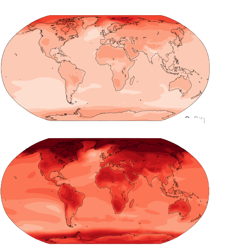

En climatología, el calentamiento global o calentamiento mundial es el aumento a largo plazo de la temperatura atmosférica media del sistema climático de la Tierra debido a la intensificación del efecto invernadero. Es un aspecto primordial del cambio climático actual, demostrado por la medición directa de la temperatura, el registro de temperaturas del último milenio y de varios efectos del calentamiento global ya visibles En el pasado, ha habido variaciones históricas en el clima de la Tierra con pruebas aportadas por estudios en paleoclimatología, pero las que están ocurriendo actualmente lo están haciendo a un ritmo sin precedentes que no puede ser explicado por causa natural alguna, por lo que, según la evidencia científica del calentamiento global, este drástico cambio solo puede deberse a la desmedida actividad humana de los últimos tiempos, la cual es una de las principales causas del calentamiento global.
Elevación térmica observada
La temperatura promedio de la superficie de la Tierra ha aumentado alrededor de 0,8 °C desde 1880.45. La velocidad de calentamiento casi se duplicó en la segunda mitad de dicho periodo (0,13 ± 0,03 °C por década, versus 0,07 ± 0,02 °C por década). El efecto isla de calor es muy pequeño, estimado en menos de 0,002 °C de calentamiento por década desde 1900. Las temperaturas en la troposfera inferior se han incrementado entre 0,13 y 0,22 °C por década desde 1979, de acuerdo con las mediciones de temperatura por satélite. Los proxies climáticos demuestran que la temperatura se ha mantenido relativamente estable durante mil o dos mil años hasta 1850, con fluctuaciones que varían regionalmente tales como el Período cálido medieval y la Pequeña edad de hielo.

Opinión científica
La opinión científica sobre el cambio climático es el juicio global entre científicos con respecto a la extensión en la que está ocurriendo el calentamiento global, sus causas y sus consecuencias probables. El consenso científico es que el sistema climático de la Tierra inequívocamente está en calentamiento y que es sumamente probable (es decir, con una probabilidad mayor al 95 %) que este calentamiento sea predominantemente causado por los seres humanos. Es probable que esto surja principalmente del aumento de las concentraciones de gases de efecto invernadero en la atmósfera producto de la quema de combustibles fósiles y los cambios en los usos del suelo, parcialmente compensado por el aumento de los aerosoles causado por el hombre; los cambios naturales tuvieron poco efecto.
Esta opinión científica está expresada en informes de síntesis, por cuerpos científicos de prestigio nacionales e internacionales y por encuestas de opinión entre científicos del clima. Científicos, universidades y los laboratorios individuales contribuyen a la opinión científica global a través de sus publicaciones revisadas por pares, y las áreas del acuerdo colectivo y certeza relativa son resumidas en los informes y encuestas. Desde 2004, se han llevado a cabo al menos 9 encuestas a científicos y metaestudios de artículos académicos sobre el calentamiento global. Pese a que hasta el 18 % de los científicos encuestados puede disentir de la opinión consensuada, cuando se restringe a los científicos que publican en el campo del clima, el 97 al 100 % está de acuerdo con el consenso: el actual calentamiento es principalmente antrópico (causado por el ser humano). En 2021 se publicó un nueva investigación realizada a 88.125 estudios científicos revisados por pares relacionados con el clima, de los cuales 99,9% de los artículos coinciden en que el cambio climático es causado principalmente por los seres humanos.